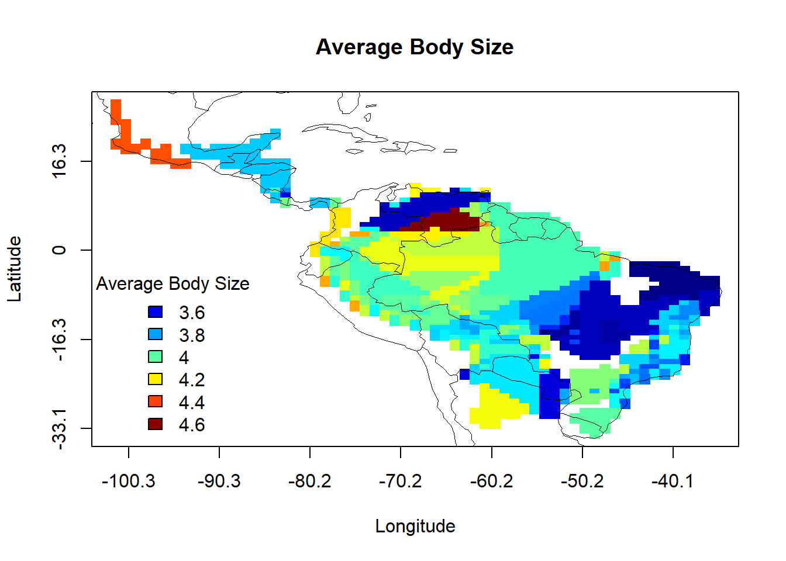
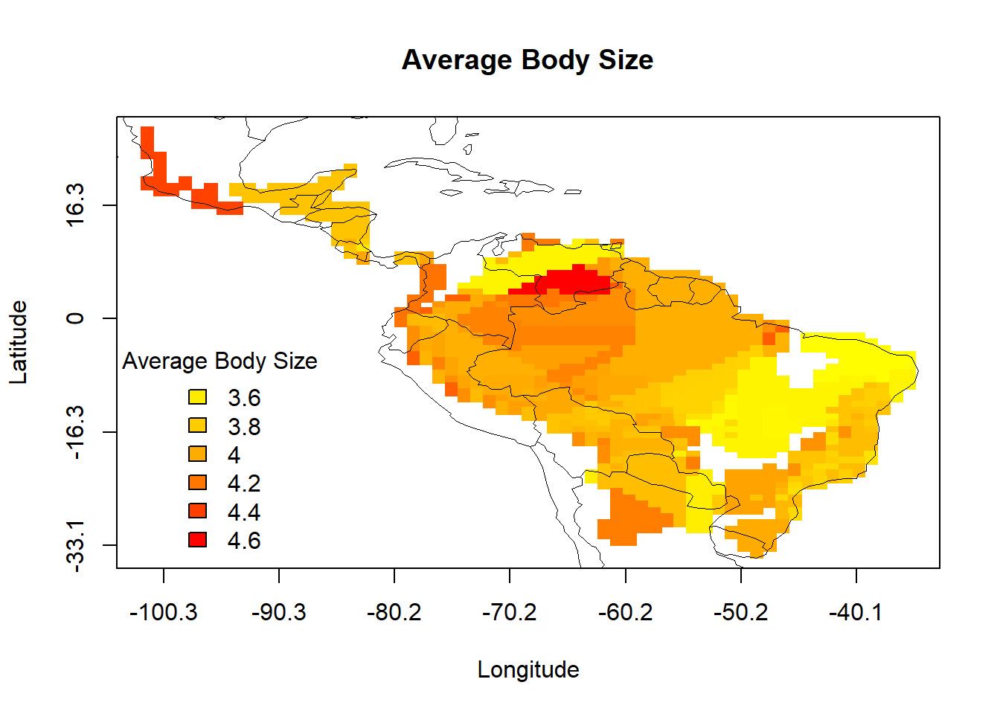
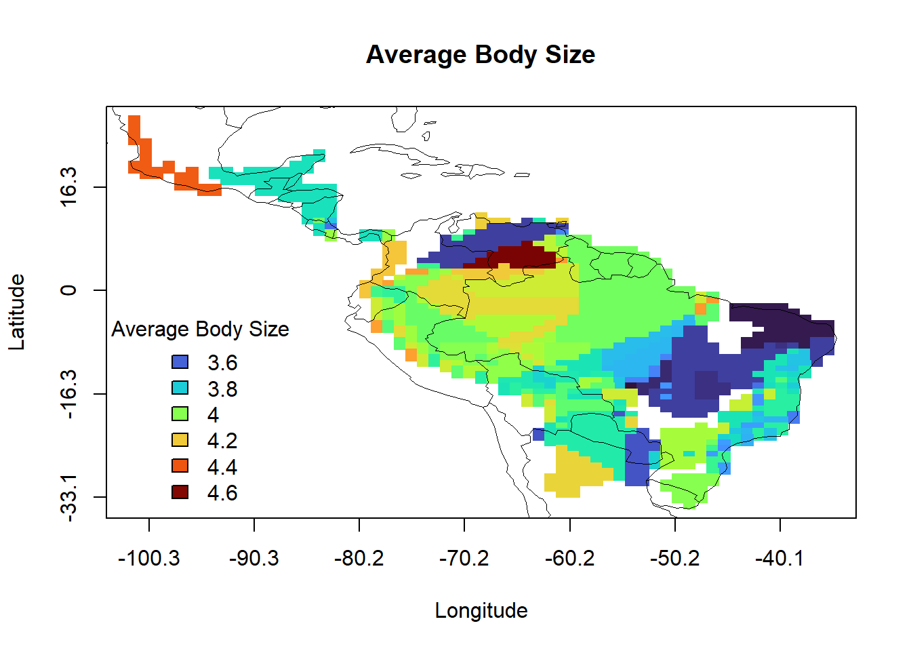
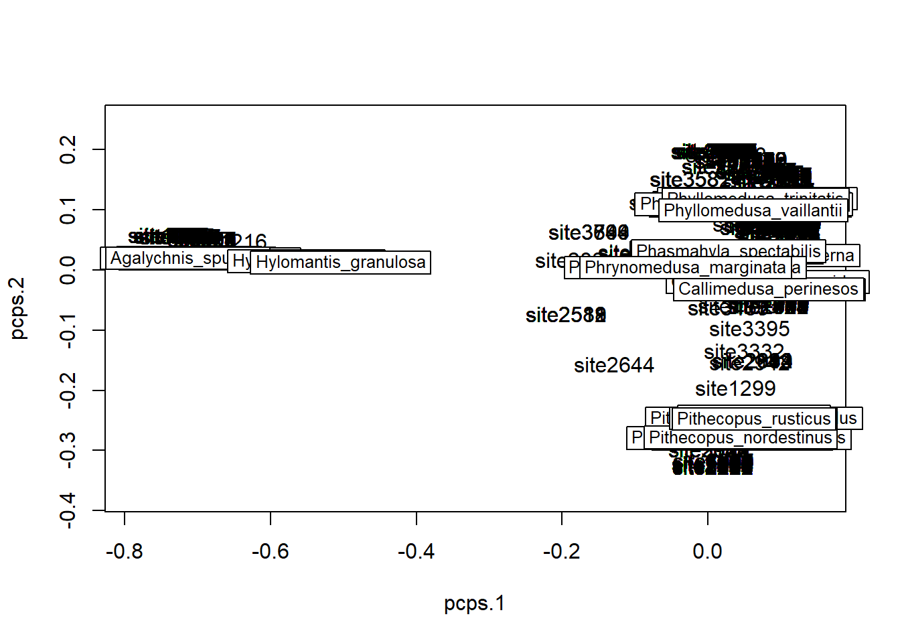
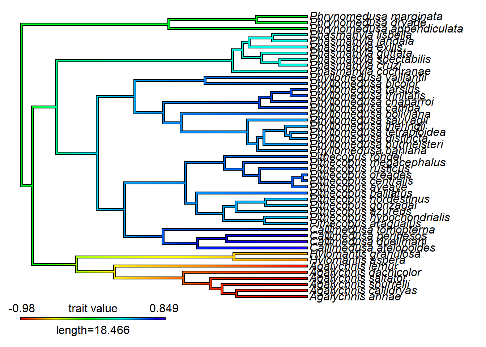
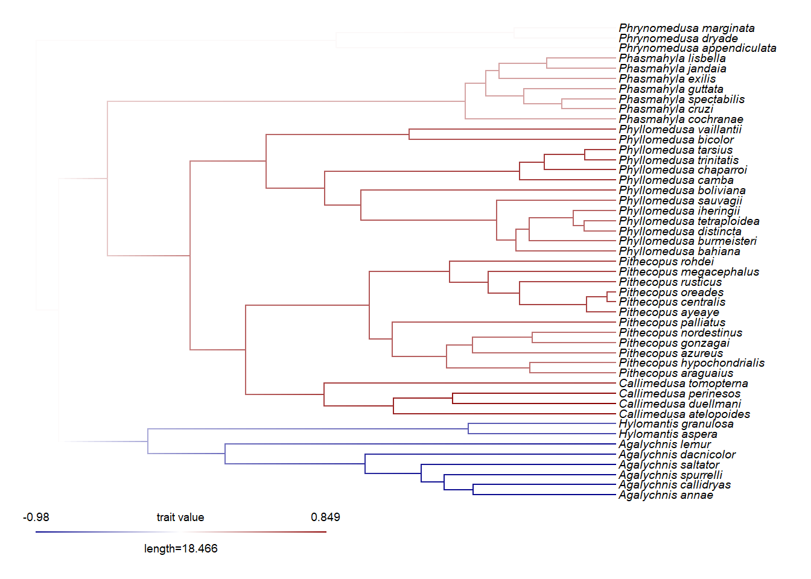
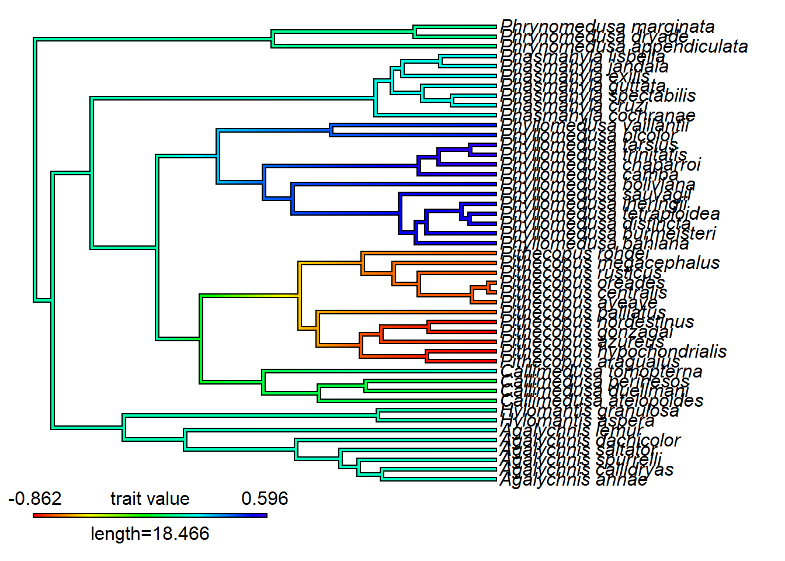
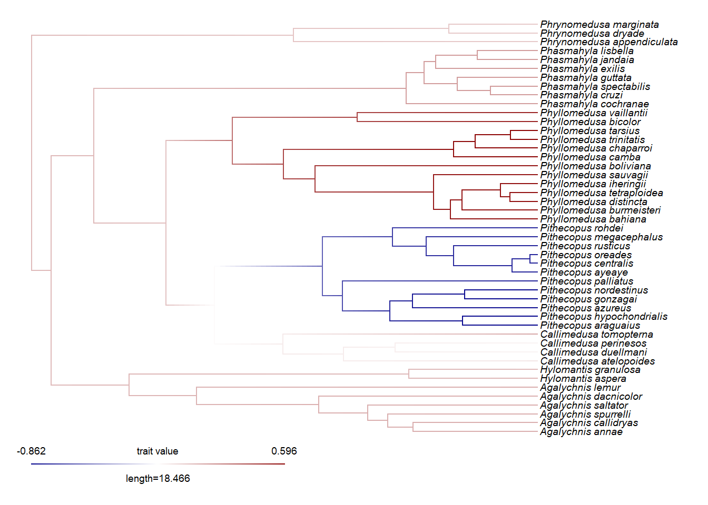
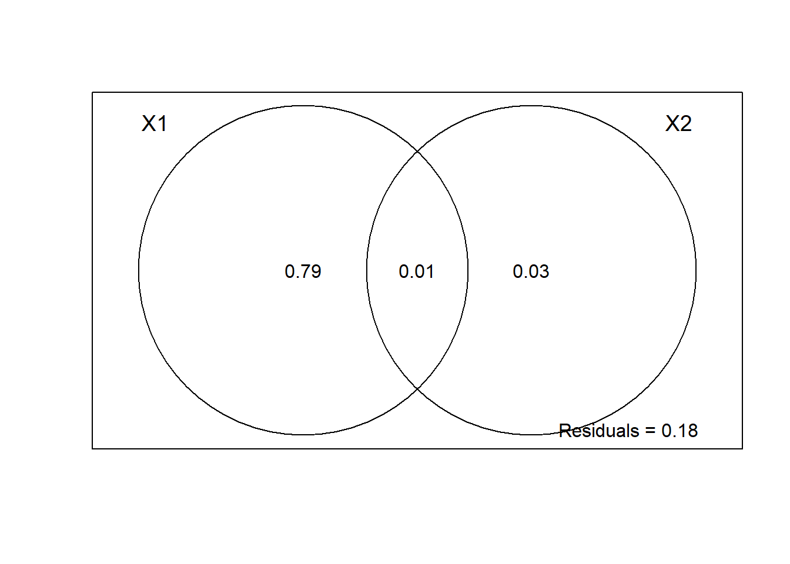
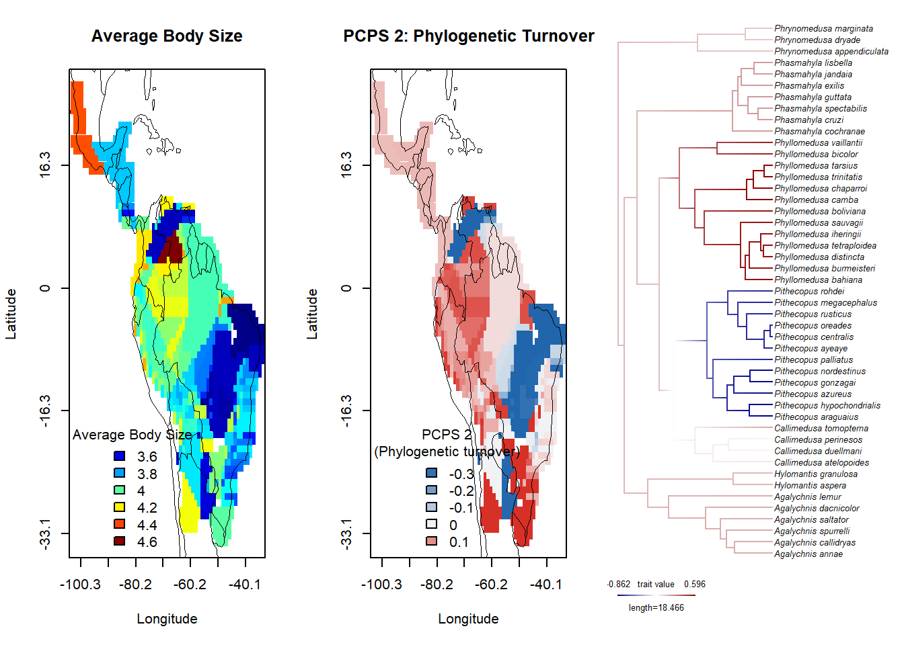

Este tutorial tem como objetivo mapear características (traits) na geografia. Aprenderemos como mapear métricas de tendência central de características (por exemplo, a média) e correlacioná-las com métricas de composição filogenética e preditores ambientais.
35.1 Carregar pacotes
library(ape)library(geiger)
Carregando pacotes exigidos: phytools
Carregando pacotes exigidos: maps
library(dplyr)
Anexando pacote: 'dplyr'
O seguinte objeto é mascarado por 'package:ape':
where
Os seguintes objetos são mascarados por 'package:stats':
filter, lag
Os seguintes objetos são mascarados por 'package:base':
intersect, setdiff, setequal, union
library(SYNCSA)
Warning: pacote 'SYNCSA' foi compilado no R versão 4.6.1
library(phytools)library(PCPS)
Warning: pacote 'PCPS' foi compilado no R versão 4.6.1
library(adespatial)
Warning: pacote 'adespatial' foi compilado no R versão 4.6.1
Registered S3 method overwritten by 'spdep':
method from
plot.mst ape
Registered S3 method overwritten by 'adespatial':
method from
plot.multispati adegraphics
library(vegan)
Warning: pacote 'vegan' foi compilado no R versão 4.6.1
Carregando pacotes exigidos: permute
Warning: pacote 'permute' foi compilado no R versão 4.6.1
Anexando pacote: 'vegan'
O seguinte objeto é mascarado por 'package:SYNCSA':
pca
O seguinte objeto é mascarado por 'package:phytools':
scores
library(sf)
Linking to GEOS 3.14.1, GDAL 3.12.1, PROJ 9.7.1; sf_use_s2() is TRUE
source("dadosbiogeo/map_grid_function.R")
35.2 Mapeando características
35.2.1 Métricas de tendência central
Regras ecogeográficas podem ser investigadas mapeando características ao longo do espaço geográfico. Para assembleias compostas por espécies relacionadas, podemos calcular a média da característica em cada local (site). Essa abordagem é comum em macroecologia e também em áreas relacionadas, como a ecologia de metacomunidades, onde essas médias às vezes incorporam a abundância e são chamadas de Médias Ponderadas pela Comunidade (CWM - Community Weighted-Means). Em estudos macroecológicos, as médias das características são geralmente calculadas assumindo a média de todas as espécies descritas pelas ocorrências (presença/ausência). Vamos primeiro carregar nossos dados: características, matriz de ocorrência e filogenia.
Em estudos macroecológicos, é raro ter dados de ocorrência geográfica, dados de características e dados filogenéticos para a exata mesma amostra de espécies. Vamos cruzar os dados para o menor conjunto de dados.
# Cruzar dados filogenéticos com características/geografiamatch <-treedata(phylogeny, morphology)
Warning in treedata(phylogeny, morphology): The following tips were not found in 'data' and were dropped from 'phy':
Agalychnis_hulli
Agalychnis_moreletii
Agalychnis_terranova
Aplastodiscus_leucopygius
Boana_crepitans
Bokermannohyla_hylax
Callimedusa_baltea
Callimedusa_ecuatoriana
Corythomantis_greeningi
Cruziohyla_calcarifer
Cruziohyla_craspedopus
Cruziohyla_sylviae
Dendropsophus_nanus
Duellmanohyla_rufioculis
Hyloscirtus_armatus
Itapotihyla_langsdorffii
Litoria_freycineti
Litoria_inermis
Litoria_meiriana
Litoria_rubella
Nesorohyla_kanaima
Nyctimantis_brunoi
Nyctimantis_siemersi
Nyctimystes_foricula
Nyctimystes_infrafrenatus
Nyctimystes_kubori
Nyctimystes_narinosus
Nyctimystes_pulcher
Osteocephalus_leprieurii
Phyllomedusa_neildi
Phyllomedusa_venusta
Ptychohyla_euthysanota
Ranoidea_alboguttata
Ranoidea_aurea
Ranoidea_australis
Ranoidea_brevipes
Ranoidea_caerulea
Ranoidea_dayi
Ranoidea_genimaculata
Ranoidea_lesueurii
Ranoidea_maini
Ranoidea_manya
Ranoidea_nannotis
Rheohyla_miotympanum
Scinax_catharinae
Sphaenorhynchus_dorisae
Tepuihyla_rodriguezi
Trachycephalus_mesophaeus
Warning in treedata(phylogeny, morphology): The following tips were not found in 'phy' and were dropped from 'data':
Agalychnis_taylori
Phasmahyla_timbo
# Cruzar dados de características e geografiacommon_species_names <-intersect(colnames(occurrence.spp), rownames(morphology))# Filtrar matriz de ocorrênciaocc_filtered <- occurrence.spp |> dplyr::select(all_of(common_species_names))# Filtrar matriz de característicastraits_filtered <- morphology[common_species_names, ]# Checando e garantindo ordenação consistente, cortando locais com 0 presenças# Aproveitando a estrutura syncsa para cortar as coords tambémorg <-organize.syncsa(comm=occ_filtered, traits=traits_filtered, envir=coords)
Warning: Communities removed from community data - Check list of warning in
list.warning
35.2.4 Mapeando a variação geográfica do tamanho corporal
map_grid(coords[,1], coords[,2], cwm[,1], worldmap = epm:::worldmap,xlab ="Longitude", ylab ="Latitude",legend_title ="Average Body Size", main ="Average Body Size", cex=1.3)

Lembre-se de que você pode alterar o mapa usando qualquer argumento passado para o plot básico do R. Por exemplo, você pode querer alterar a paleta de cores, manualmente ou usando uma função existente.
map_grid(coords[,1], coords[,2], cwm[,1], worldmap = epm:::worldmap,palette =colorRampPalette(c("yellow", "orange", "red")),xlab ="Longitude", ylab ="Latitude",legend_title ="Average Body Size", main ="Average Body Size", cex=1.3)

map_grid(coords[,1], coords[,2], cwm[,1], worldmap = epm:::worldmap,palette = viridisLite::turbo,xlab ="Longitude", ylab ="Latitude",legend_title ="Average Body Size", main ="Average Body Size", cex=1.3)

Ótimo. Temos a variação geográfica do tamanho médio corporal. Agora, vamos trabalhar com filogenias.
35.3 Filogenias em análises macroecológicas de tendência central
O uso de filogenias em análises macroecológicas de tendência central, quando a variável resposta é uma estatística descritiva (como a média de uma característica), ainda é alvo de debate. As relações filogenéticas entre as espécies são frequentemente ignoradas neste tipo de abordagem. No entanto, há algumas alternativas. Filogenias podem ser usadas para: (1) estimar o componente filogenético e espécie-específico da variável de interesse antes de calcular a média por assembleia (Diniz-Filho et al. 1998, Diniz-Filho et al. 2007), ou (2) estimar a contribuição da composição filogenética (sensu Pillar & Duarte 2010) na média por assembleia (Maestri et al. 2016, 2018, Maestri 2017, Duarte et al 2018).
Vamos implementar as duas abordagens: 1 - Estimando os componentes filogenéticos e específicos da variação da característica; 2 - Estimando a contribuição da composição filogenética para a variação da característica.
Em qualquer um dos cenários acima, podemos: 3 - Estimar a contribuição da variável ambiental/ecológica/bioclimática para a variação da característica.
35.3.1 1 - Estimando os componentes filogenético (P) e específico (S)
Podemos usar a regressão de autovetores filogenéticos (PVR) para estimar os componentes filogenético (P) e específico (S) da variação da característica. O componente filogenético (previsto pelo modelo de regressão da característica sobre os autovetores de uma matriz de distância filogenética) carrega o sinal filogenético, enquanto o componente específico (os resíduos da mesma regressão) pode ser considerado livre de sinal filogenético.
A função p_s_components decompõe a matriz de distância filogenética em autovetores, realiza o PVR e retorna os componentes filogenéticos e específicos da variação da característica.
source("dadosbiogeo/p_s_components.R")
Warning: pacote 'picante' foi compilado no R versão 4.6.1
Carregando pacotes exigidos: nlme
Anexando pacote: 'nlme'
O seguinte objeto é mascarado por 'package:dplyr':
collapse
ps <-p.s.comps(phy=phylogeny, sppnames=names(bodysize),data=as.matrix(bodysize))ps[[1]] # Porcentagem da característica explicada pela filogenia
# Componentes filogenético e específicoP.comp <- ps[[2]][,1]S.comp <- ps[[2]][,2]
Agora, podemos calcular a média dos componentes P e S nas assembleias. A média P representa regiões onde o conservadorismo filogenético foi mais evidente, enquanto a média S representa a variação da característica que é independente do sinal filogenético.
# Média P por assembleiatmatrix.P <-matrix.t(occurrence.spp, as.data.frame(P.comp), scale=FALSE)cwm.P <- tmatrix.P$matrix.T# Média S por assembleiatmatrix.S <-matrix.t(occurrence.spp, as.data.frame(S.comp), scale=FALSE)cwm.S <- tmatrix.S$matrix.T
Comparando os mapas, notamos que o padrão do tamanho corporal médio bruto é semelhante ao padrão do componente específico. Isso sugere que o padrão bruto é robusto, independentemente da distribuição da característica na filogenia. Podemos testar o sinal filogenético na característica.
phylosig(phylogeny, bodysize)
Phylogenetic signal K : 0.699615
35.3.2 2 - Estimando a contribuição da composição filogenética
Podemos estimar a contribuição da composição filogenética das assembleias para a variação da característica. A vantagem desta abordagem é que a composição filogenética entra como um preditor no modelo final, evitando questões problemáticas/debatidas sobre o uso de resíduos livres de sinal filogenético e/ou a remoção de efeitos filogenéticos. Ao mesmo tempo, esta abordagem permite estimar as contribuições conjuntas e exclusivas da composição filogenética e ecologia/ambiente sobre a variação da característica. As contribuições únicas representam (i) a variação da característica que pode ser explicada apenas pela composição filogenética dentro da assembleia (história biogeográfica) em oposição à (ii) variação que é explicada apenas pela variação ecológica/ambiental (adaptação macroecológica), enquanto a contribuição conjunta (iii) pode ser interpretada como conservadorismo de nicho filogenético ao nível da assembleia/metacomunidade.
Primeiro, vamos construir autovetores que representam a variação na composição filogenética das assembleias.
all_pcps <-pcps(occurrence.spp, cophenetic(phylogeny))# Correlação entre locais e espéciesplot(all_pcps)

Esses autovetores (chamados PCPS - Principal Component of Phylogenetic Structure) representam os eixos da composição filogenética. Outra maneira de interpretar é que, de um extremo ao outro do vetor, eles representam gradientes de diversidade beta filogenética (turnover) entre as assembleias. Os primeiros eixos de PCPS, com maior explicação da matriz de composição filogenética total, descrevem gradientes relacionados a diferenças geográficas entre nós basais/antigos, enquanto os eixos posteriores de PCPS descrevem gradientes relacionados a diferenças geográficas entre nós terminais, próximos ao presente, na composição filogenética das assembleias. Podemos mapear o PCPS na filogenia e no espaço geográfico.
# Mapear na filogenia, primeiro gradiente PCPSplot.frogs <- phytools::contMap(phylogeny, all_pcps$correlations[,1], lwd =2, outline=TRUE)

set.frogs <-setMap(plot.frogs, c("darkblue", "white", "darkred")) # de - para +plot.contMap(set.frogs, lwd=1, fsize=0.6, outline=FALSE)

# Mapear na filogenia, segundo gradiente PCPSplot.frogs <- phytools::contMap(phylogeny, all_pcps$correlations[,2], lwd =2, outline=TRUE)

set.frogs <-setMap(plot.frogs, c("darkblue", "white", "darkred")) # de - para +plot.contMap(set.frogs, lwd=1, fsize=0.6, outline=FALSE)

Agora, vamos mapeá-lo na geografia. Podemos repetir o processo para cada PCPS desejado.
Ótimo. Agora vamos particionar a contribuição da composição filogenética e ambiente para a variação da característica. Por simplicidade, usaremos a latitude como nossa variável ambiental. Será que a adaptação relacionada à latitude (adaptação macroecológica) ou os gradientes selecionados de composição filogenética (história biogeográfica) explicam melhor a variação do tamanho corporal de sapos na região Neotropical?
# Selecionar apenas os PCPS importantespcps_sel <-forward.sel(cwm, all_pcps$vectors, R2more=0.05)
Testing variable 1
Testing variable 2
Testing variable 3
Procedure stopped (R2more criteria): variable 3 explains only 0.026666 of the variance.
Partition of variance in RDA
Call: varpart(Y = cwm, X = pcps_important, latitude)
Explanatory tables:
X1: pcps_important
X2: latitude
No. of explanatory tables: 2
Total variation (SS): 66.056
Variance: 0.059563
No. of observations: 1110
Partition table:
Df R.squared Adj.R.squared Testable
[a+c] = X1 2 0.79147 0.79109 TRUE
[b+c] = X2 1 0.03992 0.03906 TRUE
[a+b+c] = X1+X2 3 0.82473 0.82426 TRUE
Individual fractions
[a] = X1|X2 2 0.78520 TRUE
[b] = X2|X1 1 0.03317 TRUE
[c] 0 0.00589 FALSE
[d] = Residuals 0.17574 FALSE
---
Use function 'rda' to test significance of fractions of interest
plot(cwm_part)

Olhe novamente.
par(mfrow =c(1, 3)) # 1 linha, 3 colunas# Mapear o tamanho corporal médiomap_grid(coords[,1], coords[,2], cwm[,1], worldmap = epm:::worldmap,xlab ="Longitude", ylab ="Latitude",legend_title ="Average Body Size",main ="Average Body Size", cex =2)# Mapear o turnover filogenéticomap_grid(coords[,1], coords[,2], pcps_x, worldmap = epm:::worldmap,xlab ="Longitude", ylab ="Latitude",legend_title ="PCPS 2\n(Phylogenetic turnover)",main ="PCPS 2: Phylogenetic Turnover", cex =2)# Mapear o turnover filogenético na filogeniaplot.contMap(set.frogs, lwd=1, fsize=0.6, outline=FALSE)

par(mfrow =c(1, 1))
35.4 Desafio 2
Em vez de mapear usando a matriz de ocorrência (presença/ausência) junto com funções R personalizadas, você também pode usar o pacote epm do Exercício 1 para mapear. Tente incorporar a morfologia na estrutura epm usando a função addTraits do epm, e então tente mapear o tamanho corporal médio nas células.
35.5 Referências
Diniz-Filho, J. A. F., C. E. R. Sant’Ana, and L. M. Bini. 1998. An eigenvector method for estimating phylogenetic inertia. Evolution 52:1247-1262.
Diniz-Filho, J.A.F., Bini, L.M., Rodríguez, M.Á., Rangel, T.F.L.V.B. and Hawkins, B.A. (2007), Seeing the forest for the trees: partitioning ecological and phylogenetic components of Bergmann’s rule in European Carnivora. Ecography, 30: 598-608.
Duarte, L. D. S., Debastiani, V. J., Carlucci, M. B. and Diniz-Filho, J. A. F. 2018. Analyzing community weighted trait means across environmental gradients: should phylogeny stay or should it go? Ecology 99: 385-398.
Maestri, R. (2017). Using phylogenetic clade composition to understand biogeographical variation in functional traits. Frontiers of Biogeography, 9(3).
Maestri, R. et al. 2016. Geographical variation of body size in sigmodontine rodents depends on both environment and phylogenetic composition of communities. Journal of Biogeography 43: 1192-1202.
Maestri, R., Monteiro, L.R., Fornel, R., de Freitas, T.R.O. and Patterson, B.D. (2018), Geometric morphometrics meets metacommunity ecology: environment and lineage distribution affects spatial variation in shape. Ecography, 41: 90-100.
Pillar, V. D. and Duarte, L. D. S. 2010. A framework for metacommunity analysis of phylogenetic structure. Ecology Letters 13: 587-596.